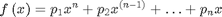
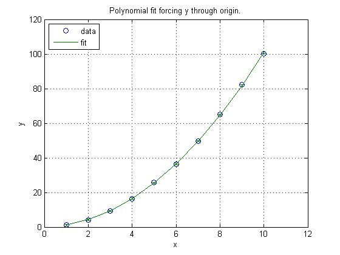
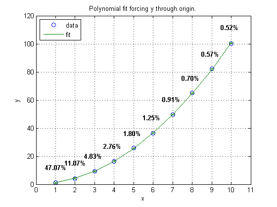

polyfitZero example
Contents
LaTex

initialize workspace
close('all'),clear('all'),clc
create some data with noise
x = 1:10;y = (x+rand(1,10)/10).^2;
fit data
degree = 2; p = polyfitZero(x,y,degree); for n = 1:degree,fprintf('p%d = %f\n',n,p(n)),end
p1 = 0.995270 p2 = 0.123069
scale data
[p,~,mu] = polyfitZero(x,y,degree); fprintf('\nScale X:\n') for n = 1:degree,fprintf('p%d = %f\n',n,p(n)),end fprintf('scaled by %f\n',mu(2))
Scale X: p1 = 9.123306 p2 = 0.372611 scaled by 3.027650
get error estimates
[p,S,mu] = polyfitZero(x,y,degree); [yest,derr] = polyval(p,x,S,mu); % fit to data, calculate error plot(x,y,'o'),hold('all'),grid errorbar(x,yest,derr),title('Polynomial fit forcing y through origin.') xlabel('x'),ylabel('y'),legend('data','fit','Location','NorthWest')
annotate
pos = get(gca,'Position'); xl = 11;xlim([0,xl]),yl=120;ylim([0,yl]) for n = 1:numel(x) xpos = pos(1)+pos(3)*x(n)/xl;ypos = pos(2)+pos(4)*yest(n)/yl;xtrim = -0.05; annotation('textbox',[xpos+xtrim,ypos,0.1,0.1], ... 'LineStyle','none','FontWeight','bold', ... 'String',sprintf('%4.2f%%',derr(n)/yest(n)*100)) end